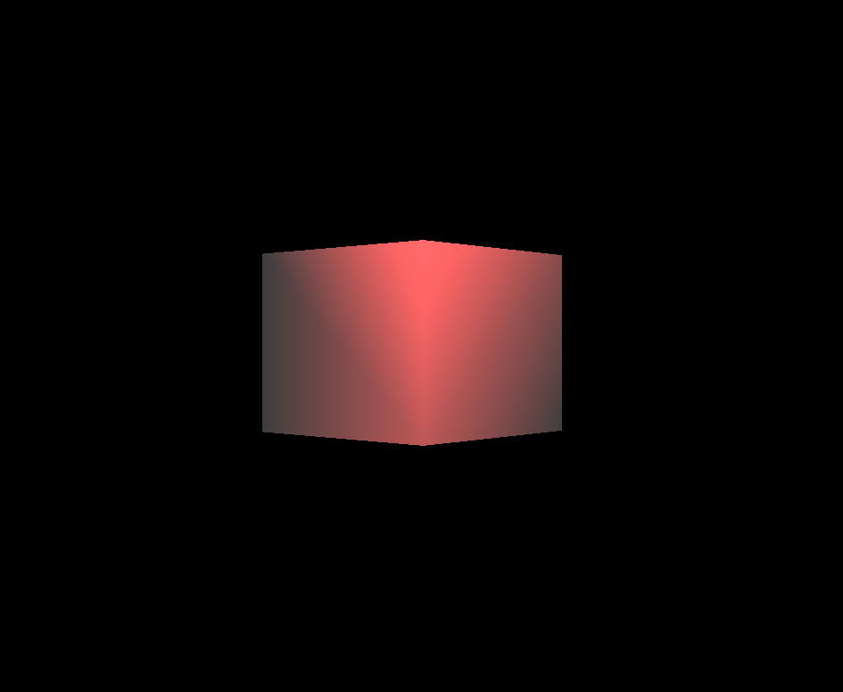
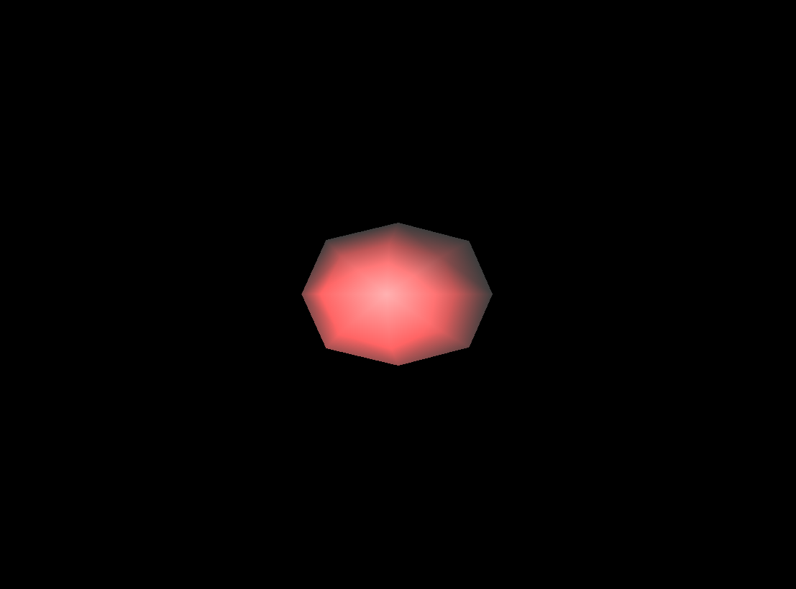
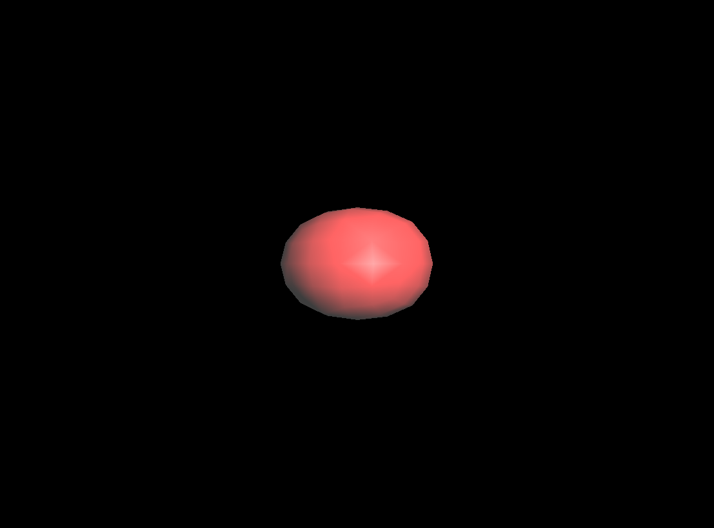
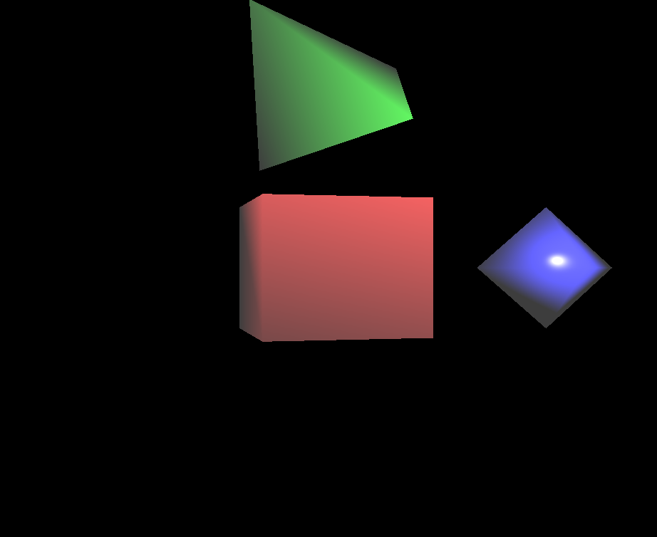
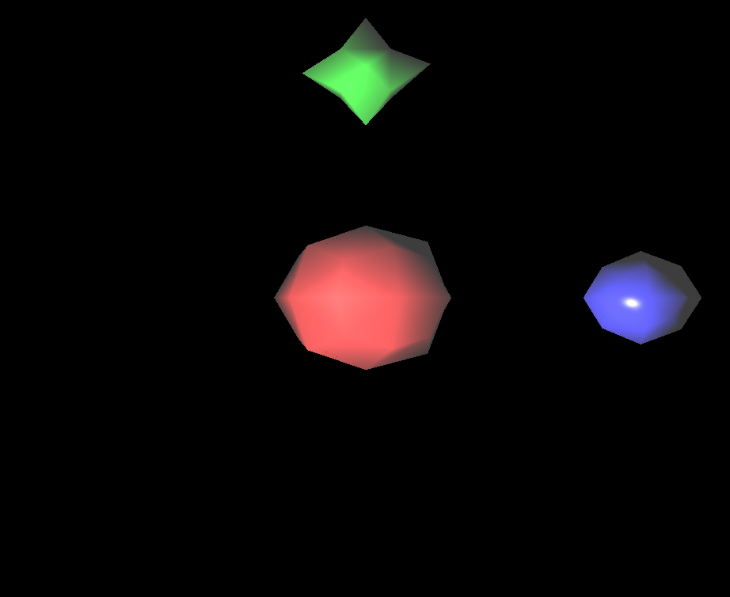
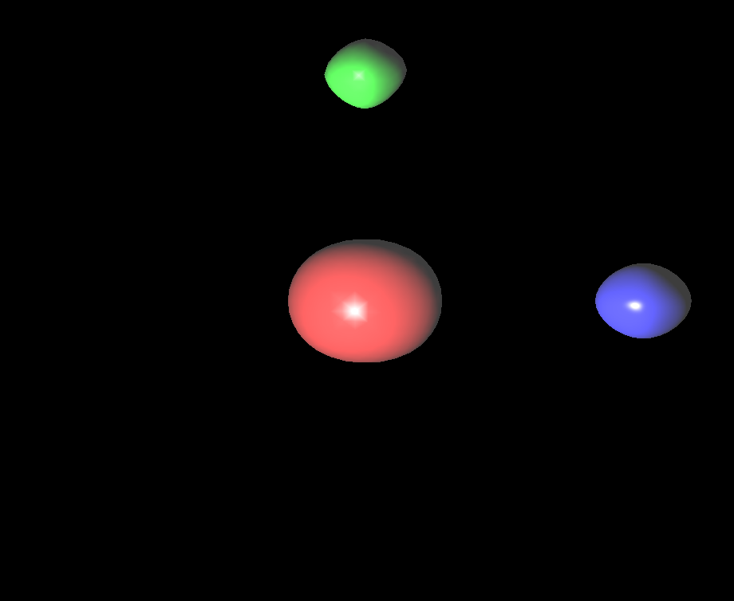
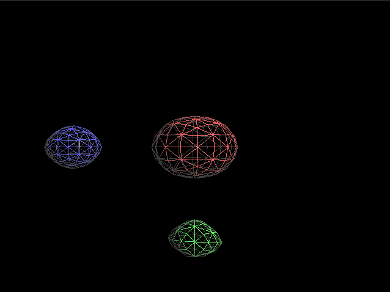
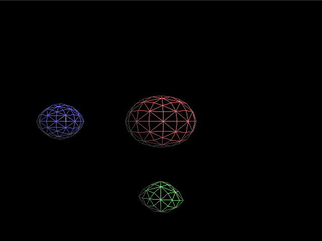
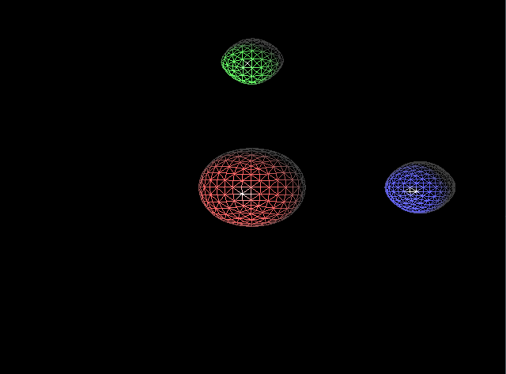

Last edited:
Hello,
In this blog post, I will explain the Catmull-Clark subdivision surface algorithm and my experiences in the implementation of this algorithm. Firstly, I implemented this algorithm for my CENG469: Computer Graphics 2 class as a first homework. The Catmull-Clark algorithm is a technique used in computer graphics to create smooth surfaces by subdividing a mesh. The algorithm was developed by Edwin Catmull and Jim Clark in 1978. It is commonly used in 3D modeling software to create smooth surfaces from a coarse mesh.
First of all, I started my implementation by reading paper, wikipedia page of the algorithm and looking the sample opengl code provided in course page. In the sample opengl, parser is just work for faces with three faces. I upgraded for work both quads and triangles. In my design of algorithm, I first coded my algorithm only for quads. After the upgrade the parser accordingly, for drawing face, I will first use by calling drawElements by sending GL_QUADS as a parameter. However, GL_QUADS is depreciated in the latest opengl version. Because of that, I will send it to the buffer as a triangles and call drawElements by sending GL_TRIANGLES.
As shown in figure above, it will simply shows us 1x1x1 cube as a result. After the first visual output, I started to implementation of the catmull-clark subdivision algorithm. In this implementation, I iterate all faces and in the iteration I found the face point which is the middle point of the current face as a one vertex of the new object. As a 2 new vertex, I find mid point of the edges and take the average of the new face points of these new points which uses these edges. And new vertex point as shown in paper I calculate as (F+2R+(n-3)P)/n. To not calculate these new vertices again and again I used unordered map and firstly check that in this map to calculate this new vertex before.
In that figure, it's be seen that 1st level of catmull clark algorithm. I checked these new vertices in blender to all vertices is correct according to the original algorithm.
This is the second level of the algorithm. The upper level of algorithms makes this box circler at each level.
For the triangle faces, I applied the same structure but it is for 3 vertices. However, after the first applied level, all faces becomes quads again and it is applied same as quads.
 It works for both objects and all the levels became correct according to the paper.
In this figure, it is shown that the 3rd level of the algorithm. It is seen that the object is more circular than the previous levels.
In this process, I calculate normals wrong initially. Because of that the color of my objects was not correct. It takes my time to find out what is the problem. I also faced with a problem in buffer offset length. Initially I calculate it wrong also. Because of that only my first object seen correctly and other object vertices goes different wrong places. Apart from these two problems, I did not face with any problem.
For the level 5 and 6 it takes time to calculate the new vertices but after the calculation, it takes no time to go and model these levels since it stores the calculated levels in the arrays. In the previous levels there is no problems for the calculation speed.
  In the figures above, it is other modes you can see all faces clearly.
In conclusion, I implemented the Catmull-Clark subdivision surface algorithm for my CENG469: Computer Graphics 2 class as a first homework. I faced with some problems in the implementation of the algorithm but I solved them. I am happy with the result of my implementation.